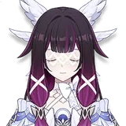

Bài Ca Không Nguyệt · Màn VIII
Mặt Trăng Thực Sự
Nhiệm vụ Ma Thần — Nod-Krai
Nhân vật xuất hiện
 Nhân vật chính · Nhà Lữ HànhLumineNhà Lữ Hành đến từ thế giới khác. Bị vị thần lạ mặt phong ấn và cướp mất người anh song sinh, cô bắt đầu hành trình đi tìm Bảy Vị Thần của Teyvat.
Nhân vật chính · Nhà Lữ HànhLumineNhà Lữ Hành đến từ thế giới khác. Bị vị thần lạ mặt phong ấn và cướp mất người anh song sinh, cô bắt đầu hành trình đi tìm Bảy Vị Thần của Teyvat. Bạn đồng hànhPaimonĐược Lumine cứu khỏi chết đuối hai tháng trước, Paimon tự nhận làm người dẫn đường cho cô. Hay ăn, hay nói, và rất ghét bị gọi là “thực phẩm dự trữ”.
Bạn đồng hànhPaimonĐược Lumine cứu khỏi chết đuối hai tháng trước, Paimon tự nhận làm người dẫn đường cho cô. Hay ăn, hay nói, và rất ghét bị gọi là “thực phẩm dự trữ”.
Tam Nguyệt Nữ Thần duy nhất của TeyvatColumbinaĐi ngược thời không gặp Tam Nguyệt Nữ Thần nguyên thủy, tiếp nhận quyền năng ba mặt trăng để tái lâm đánh bại Dottore và mở lối phi thuyền.- Quan Chấp Hành thứ bảy Fatui (“Marionette”)SandroneHoàn thành thuật thức thế giới giấu trong Pulonia và dũng cảm đỡ đòn chí mạng thay Lumine trong trận chiến cuối.
 “Nón Tròn”Kẻ Lang ThangTự nguyện rút lõi Cây Thế Giới của bản thân để vận hành thuật thức thế giới, sau chiến thắng hồi phục và trở về Sumeru.
“Nón Tròn”Kẻ Lang ThangTự nguyện rút lõi Cây Thế Giới của bản thân để vận hành thuật thức thế giới, sau chiến thắng hồi phục và trở về Sumeru.- Quan Chấp Hành thứ hai Fatui (“Kẻ Dị Giáo Của Mặt Trăng Giả”)DottoreBị Columbina cùng Lumine, Flins, Lauma và Nefer hợp lực đánh bại và tan biến tại không gian mặt trăng giả.
 Quan Chấp Hành thứ tư FatuiArlecchinoCùng Varka và Nicole kéo Sương Nguyệt xuyên qua bầu trời giả, nhận lại Tủy Mặt Trăng Hồng Nguyệt và khởi hành về Fontaine.
Quan Chấp Hành thứ tư FatuiArlecchinoCùng Varka và Nicole kéo Sương Nguyệt xuyên qua bầu trời giả, nhận lại Tủy Mặt Trăng Hồng Nguyệt và khởi hành về Fontaine. Các đại diện Liên Minh Nod-KraiNefer · Lauma · Flins · Jahoda · IllugaPhối hợp đánh bại Dottore, bảo vệ Thị Trấn Nasha và cùng đại diện Người Giữ Đèn Illuga thành lập Liên Minh Nod-Krai.
Các đại diện Liên Minh Nod-KraiNefer · Lauma · Flins · Jahoda · IllugaPhối hợp đánh bại Dottore, bảo vệ Thị Trấn Nasha và cùng đại diện Người Giữ Đèn Illuga thành lập Liên Minh Nod-Krai. Kỵ Sĩ Tây Phong & Thiên Sứ Hội Ma NữVarka · Albedo · Durin · NicoleKéo Sương Nguyệt trở về, chuyển giao ước bảo vệ Nod-Krai và bảo toàn thị trấn sau thảm họa.
Kỵ Sĩ Tây Phong & Thiên Sứ Hội Ma NữVarka · Albedo · Durin · NicoleKéo Sương Nguyệt trở về, chuyển giao ước bảo vệ Nod-Krai và bảo toàn thị trấn sau thảm họa. Cư dân Nasha & phần linh hồn kết nối của ColumbinaAino · Ineffa · LuonnotarPhân phát thực phẩm sau trận chiến và hoàn thành cầu nối đưa Columbina trở về thực tại.
Cư dân Nasha & phần linh hồn kết nối của ColumbinaAino · Ineffa · LuonnotarPhân phát thực phẩm sau trận chiến và hoàn thành cầu nối đưa Columbina trở về thực tại. Hai linh hồn nơi nhà tù ánh trăng (ký ức)Rerir · TholindisRerir đã dọn chướng ngại mở đường cho Columbina, còn Tholindis nhắn gửi lời tha thứ cho anh từ quá khứ.
Hai linh hồn nơi nhà tù ánh trăng (ký ức)Rerir · TholindisRerir đã dọn chướng ngại mở đường cho Columbina, còn Tholindis nhắn gửi lời tha thứ cho anh từ quá khứ.
Các phần
Toàn bộ lời thoại được lấy từ bản tiếng Việt chính thức của trò chơi. Ở những đoạn người chơi được chọn câu trả lời, truyện chọn một lựa chọn duy nhất.